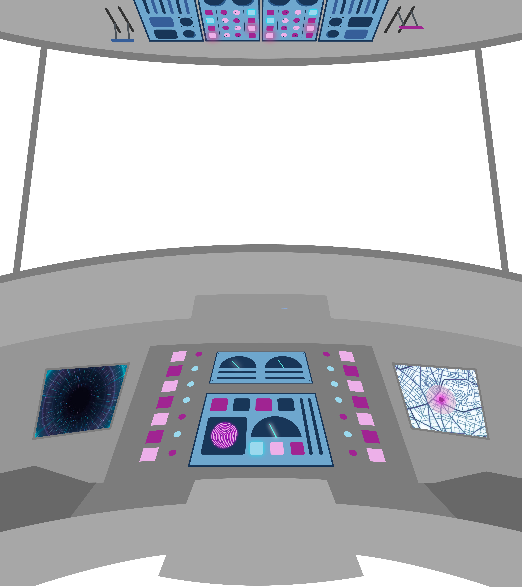

Masa Depan
yang Penuh Ancaman
Seiring berkembangnya dunia, telah terjadi berbagai pencapaian dan penemuan baru.
Namun, ancaman dan resiko juga selalu datang dalam berbagai bentuk yang tidak terduga.
Seperti apakah masa depan dari dunia yang kita punya?
Sebuah Mesin Waktu
Bernama "Data"
Satu-satunya hal yang bisa membawa kita kepada gambaran paling nyata soal masa depan
adalah data-data yang kita punya dari semua yang telah terjadi.
